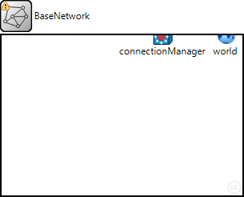
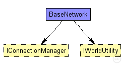
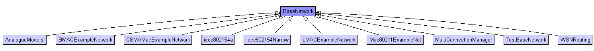

This documentation is released under the Creative Commons license
This documentation is released under the Creative Commons license(no description)
The following diagram shows usage relationships between types. Unresolved types are missing from the diagram. Click here to see the full picture.
The following diagram shows inheritance relationships for this type. Unresolved types are missing from the diagram. Click here to see the full picture.
| Name | Type | Description |
|---|---|---|
| AnalogueModels | network |
This example shows how to use AnalogueModels. |
| BMACExampleNetwork | network | (no description) |
| CSMAMacExampleNetwork | network |
This example shows how to use MiXiMs CSMA protocol implementation. |
| ieee802154a | network |
This example illustrates the use of the IEEE 802.15.4A UWB-IR simulation model implemented in MiXiM. The omnetpp.ini files comprises two scenarios. Both scenarios involve only two hosts. |
| ieee802154Narrow | network |
This example shows how to use MiXiMs implementation of the ieee802154 narrow band protocol. |
| LMACExampleNetwork | network | (no description) |
| Mac80211ExampleNet | network |
This example shows how to use MiXiMs 802.11 protocol implementation. |
| MultiConnectionManager | network |
This example shows how to use multiple ConnectionManagers in your simulation. |
| TestBaseNetwork | network |
This example shows the basic structure of an network using MiXiM. |
| WSNRouting | network |
This example shows how to simulate wireless sensor networks. Three different routing protocols are considered, for different traffic types: convergecast, with Wiseroute; network-level broadcast, with flooding; and probabilistic broadcast. |
| Name | Type | Default value | Description |
|---|---|---|---|
| playgroundSizeX | double |
x size of the area the nodes are in (in meters) |
|
| playgroundSizeY | double |
y size of the area the nodes are in (in meters) |
|
| playgroundSizeZ | double |
z size of the area the nodes are in (in meters) |
|
| cmType | string | "org.mixim.base.connectionManager.ConnectionManager" |
connection manager to use |
| wuType | string | "org.mixim.base.modules.BaseWorldUtility" |
world utility to use |
| Name | Value | Description |
|---|---|---|
| isNetwork | ||
| display | bgb=$playgroundSizeX,$playgroundSizeY,white;bgp=0,0 |
| Name | Type | Default value | Description |
|---|---|---|---|
| connectionManager.coreDebug | bool |
debug switch for core framework |
|
| connectionManager.sendDirect | bool |
send directly to the node or create separate gates for every connection |
|
| connectionManager.pMax | double |
maximum sending power used for this network [mW] |
|
| connectionManager.sat | double |
minimum signal attenuation threshold [dBm] |
|
| connectionManager.alpha | double |
minimum path loss coefficient |
|
| connectionManager.carrierFrequency | double |
minimum carrier frequency of the channel [Hz] |
|
| world.useTorus | bool |
use the playground as torus? |
network BaseNetwork { parameters: double playgroundSizeX @unit(m); // x size of the area the nodes are in (in meters) double playgroundSizeY @unit(m); // y size of the area the nodes are in (in meters) double playgroundSizeZ @unit(m); // z size of the area the nodes are in (in meters) **.mobility.constraintAreaMinX = default(0m); **.mobility.constraintAreaMinY = default(0m); **.mobility.constraintAreaMinZ = default(0m); **.mobility.constraintAreaMaxX = default(playgroundSizeX); **.mobility.constraintAreaMaxY = default(playgroundSizeY); **.mobility.constraintAreaMaxZ = default(playgroundSizeZ); string cmType = default("org.mixim.base.connectionManager.ConnectionManager"); // connection manager to use string wuType = default("org.mixim.base.modules.BaseWorldUtility"); // world utility to use @display("bgb=$playgroundSizeX,$playgroundSizeY,white;bgp=0,0"); submodules: connectionManager: <cmType> like IConnectionManager { parameters: @display("p=201,0;i=abstract/multicast;is=s"); } world: <wuType> like IWorldUtility { parameters: playgroundSizeX = playgroundSizeX; playgroundSizeY = playgroundSizeY; playgroundSizeZ = playgroundSizeZ; @display("p=280,0;i=misc/globe;is=s"); } connections allowunconnected: }
This documentation is released under the Creative Commons license